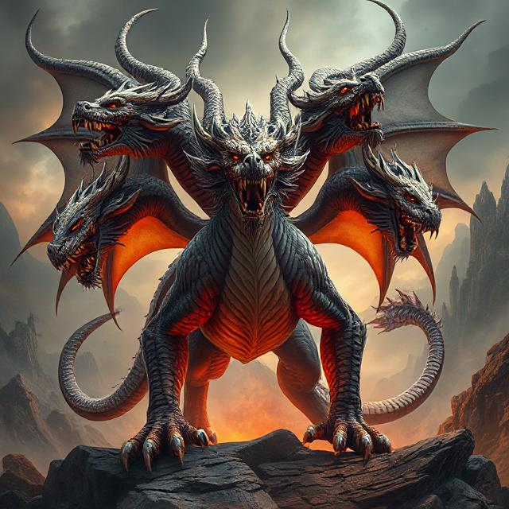

Long ago, in the kingdom of Eldar, a terrible three-headed dragon named Skarvok rose from the Black Hills. It demanded a gift every month — gold, jewels, or even people — or it would burn the villages.
One day, the dragon demanded something strange:
“Bring me a child who can make me laugh, cry, and think—or I will destroy your town.”
The villagers chose the smartest and bravest child they knew: a quiet boy named Rion.
Armed with only a flute and his wits, Rion walked into the dragon’s cave. All three heads glared at him.
“Make us laugh,” the first head roared.
Rion told a story so silly about a knight who wore his armor backward that the dragon’s first head burst out laughing, nearly coughing fire.
“Now, make us cry,” said the second head.
Rion played a soft, sad tune on his flute — a song of a lonely dragon who had no friends. The second head blinked, and a single tear sizzled down its cheek.
“Make us think,” growled the third head.
Rion stood tall. “Why do you scare people into giving you what you want… when what you truly want is to be seen?”
The third head fell silent.
The dragon, for the first time in centuries, said nothing. Then slowly, it lay down and whispered:
“You may go. You are no fool. You are a mirror.”
From that day on, the dragon never attacked again. Some say it still lives in the hills, wondering about that child who made it feel something new.